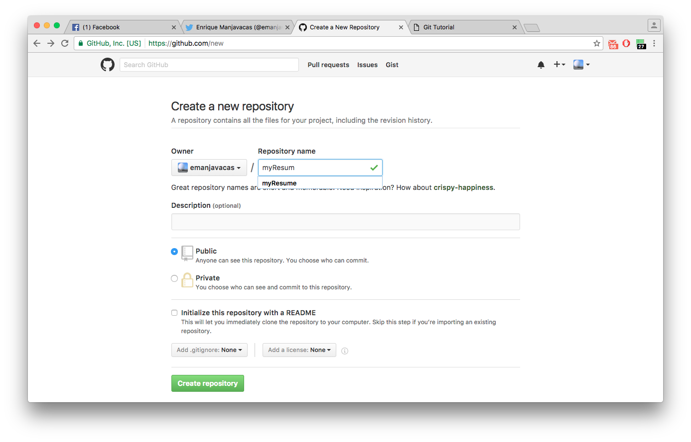
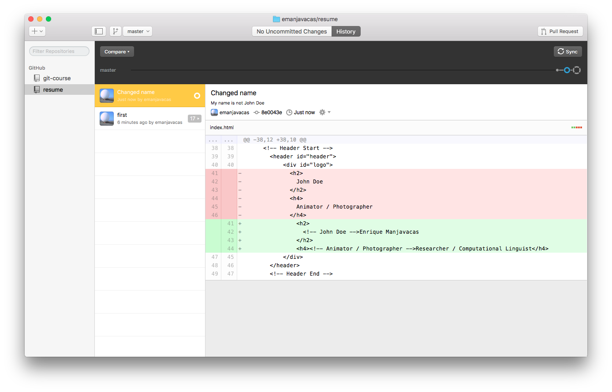

Git Tutorial
Enrique Manjavacas
14/10/2016
1 Getting started
- This is me.
- And these are materials for the course.
1.1 Get git
Follow the instructions for your OS here.
1.2 [Optionally/Alternatively] install a Git client
See Materials for the course for links to different possibilities.
2 About Git
2.1 What is git?
“Git is a free and open source distributed version control system designed to handle everything from small to very large projects with speed and efficiency” (Wikipedia)
A Version Control System (VCS) is a methodology or tool that…
- helps you keep track of changes you make to the files in your project
- and allows you to communicate and synchronize your changes with other people.
2.1.1 History
- Developed by Linux Torvalds as a means to enable the development of the Linux Kernel
- Interview with occassion of Git’s 10th Year Anniversary
- Inspired by BitKeeper (Distributed VCS that isn’t open source)
- Relatively recent in the ecosystem of VCS tools
- First git’s commit 2005
- Its main feature being that it is a distributed or decentralized system
2.1.2 Why you need it?
- Because it is used by instructors in the study programme.
- Because the need for collaborative tools is increasing and VCS are most powerful.
2.1.3 VCS vs. Collaborative Text Editors (GoogleDocs, etc.)
Synchronized vs Asynchronized Solution to the problem of collaborative editing.
“A practice by which dispersed users are able to concurrently modify shared artifacts with the guarantee that changes by different users will not automatically overwrite each other” (Altmanninger et al. 2009)
Collaborative Text Editors
- Pros
- Fast, real-time incorporation of changes.
- Cons
- Impossible to work offline
- No guarantees that change history reflects the real sequence of changes
VCS
- Pros
- Documented change history
- Unlimited in terms of participants
- Cons
- Steep learning curve
2.1.4 Take-away message
Trade-off between and simplicity.
2.2 What is not git?
- Trade-off between rigor (data-side) and easiness (UX-side).
- Most users are limited to one very end.
2.2.1 git vs GitHub
- “GitHub is a web-based Git repository hosting service, which offers all of the distributed revision control and source code management (SCM) functionality of Git as well as adding its own features.” (Wikipedia) (but there are others, see BitBucket).
2.2.2 A backup system
- While you could use git/GitHub for backing up, it cannot handle large/binary files very well.
3 Basic Git Concepts
Let’s introduce a bit of vocabulary (Last bit of me talking alone!)
See the repository README for a glossary of terms
3.0.1 Repository
All tracked files in your project plus the full history of changes (commits and branches).
3.0.2 Working Tree (or directory)
- Current local view of the project (folder).
- It can be:
- “clean” (Up to date with the tracked version)
- “dirty” (Local changes haven’t been registered yet)
Ways to change the working tree:
- Switch back to a previous state of the project (revert)
- Add a change to the current state (commit)
- Moving to another (possibly new) branch (A.K.A.
checkout) - Move to a “future” state of the project (e.g. pulling from remote changes)
3.0.3 Commit
A snapshot including changes to a previous state of the repository.
3.0.4 Branch
Any of the parallel states in the repository (a particular commit history).
4 Hands-on Tutorial
4.1 Create your own repository
For this tutorial, we are going to create a (very basic) resume homepage.
4.1.1 Using the Command Line
Create the remote
Sync locally (set a local to track the remote)
Initialize the repository
$ git init Initialized empty Git repository in /home/enrique/Documents/courses/resume
Track the remote
$ git remote add origin https://github.com/emanjavacas/resume.git
4.1.2 Using GitHub Desktop
4.1.3 Your turn
4.2 Commiting a single change
- The git workflow
- Make edit
- Checking the status of the Working Tree
$ git status On branch master Your branch is up-to-date with 'origin/master'. Changes not staged for commit: (use "git add <file>..." to update what will be committed) (use "git checkout -- <file>..." to discard changes in working directory) modified: index.html no changes added to commit (use "git add" and/or "git commit -a")
- Diffing

4.2.1 From the command line
- Add (stage)
$ git add index.html
- Commit
$ git commit -m "Changed name"
[master 9a23987] Changed name
1 file changed, 2 insertions(+), 2 deletions(-)
- Push
$ git push Counting objects: 3, done. Delta compression using up to 2 threads. Compressing objects: 100% (3/3), done. Writing objects: 100% (3/3), 395 bytes | 0 bytes/s, done. Total 3 (delta 2), reused 0 (delta 0) remote: Resolving deltas: 100% (2/2), completed with 2 local objects. To https://github.com/emanjavacas/resume.git eb6121f..9a23987 master -> master
4.2.2 From GitHub Desktop
- Add (stage) & Commit
- Push (sync)

4.2.3 Your turn
- Change your info in
index.html - Add & Commit
- Push
4.3 Commiting multiple changes
- Make changes to multiple files
$ git status On branch master Your branch is up-to-date with 'origin/master'. Changes not staged for commit: (use "git add <file>..." to update what will be committed) (use "git checkout -- <file>..." to discard changes in working directory) modified: index.html modified: css/main.css modified: images/spectrum.jpg
4.3.1 From the command line
- Git flow (add, commit)
Add email update
$ git add index.html $ git commit -m "Changed mailto"Add background update (both files at once)
$ git add css/main.css images/spectrum.jpg $ git commit -m "Changed background"
- Push
$ git push Pushing to https://github.com/emanjavacas/resume.git Counting objects: 16, done. Delta compression using up to 2 threads. Writing objects: 100% (16/16), 252.52 KiB | 0 bytes/s, done. Total 16 (delta 7), reused 0 (delta 0) POST git-receive-pack (258725 bytes) remote: Resolving deltas: 100% (7/7), completed with 3 local objects. To https://github.com/emanjavacas/resume.git 9a23987..b45d6be master -> master
4.3.2 From GitHub Desktop
- Add (stage) & Commit

- Push
4.3.3 Your turn
- Search for a background image
- Google for images (labeled for reuse; matching color; appropriate size)
- Or download the one I used from here.
- Put the file in the corresponding folder
- Change
main.css - Add & Commit (make sure you commit both files)
- Do some other changes & commit them separatedly
- Push everything
{kind=link}
4.4 Branching
We are going to edit the content in the “resume” tab
4.4.1 From the command line
- Create a new branch
- Long version
Create branch
$ git branch resume
Move to it (checkout)
$ git checkout resume Switched to branch 'resume'
Short version
$ git checkout -b resume
- Long version
- See which branches are there
#+BEGINSRC bash $ git branch -v
master 0a7be54 Changed background
5 resume 299b6f9 Changed background
#+ENDSRC
- Switch to a particular branch (magic!)
$ git checkout master
Switched to branch 'resume'
5.0.1 From GitHub Desktop
- Create a branch
- See all branches
- Select a branch
5.0.2 Your turn
- Create a branch (give it the name you prefer)
- Switch to it (if you are not there yet)
- Make local changes (as shown previously) & Commit

- Create a branch (give it the name you prefer)
- Switch to it (if you are not there yet)
- Make local changes (as shown previously) & Commit
- Push (and see the results in your remote)
5.1 Merging from local branch
5.2 Merging a pull request
5.3 Revert
6 Goodie
- If you change the name of your repository to
username.github.io, you can get your own personal page served by GitHub - More info about GitHub Pages here.